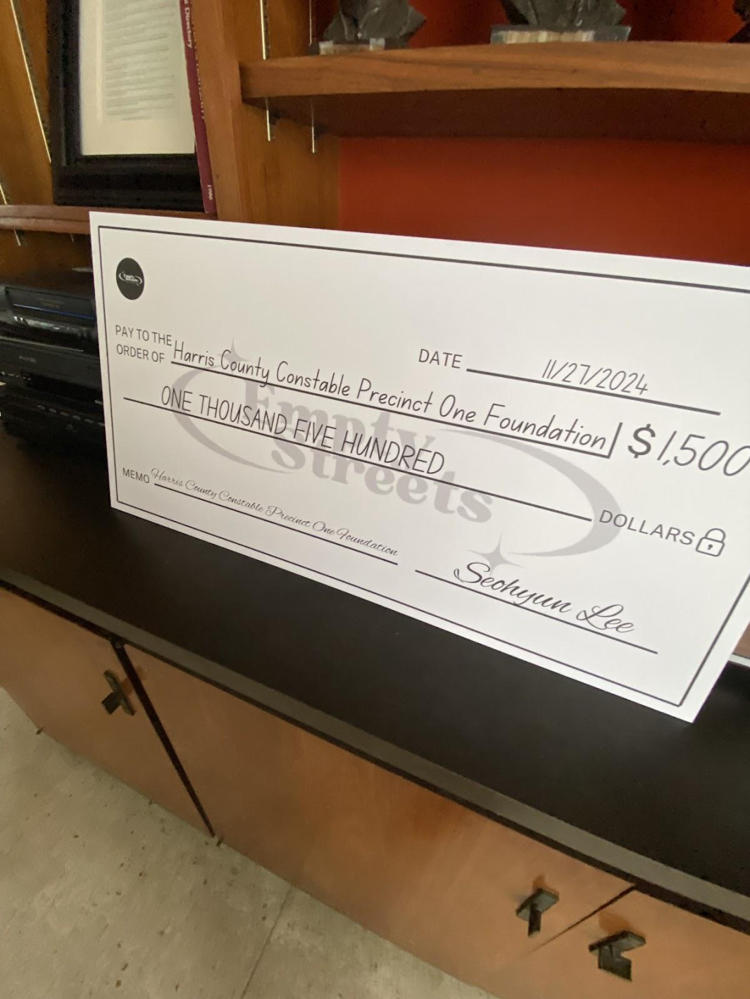
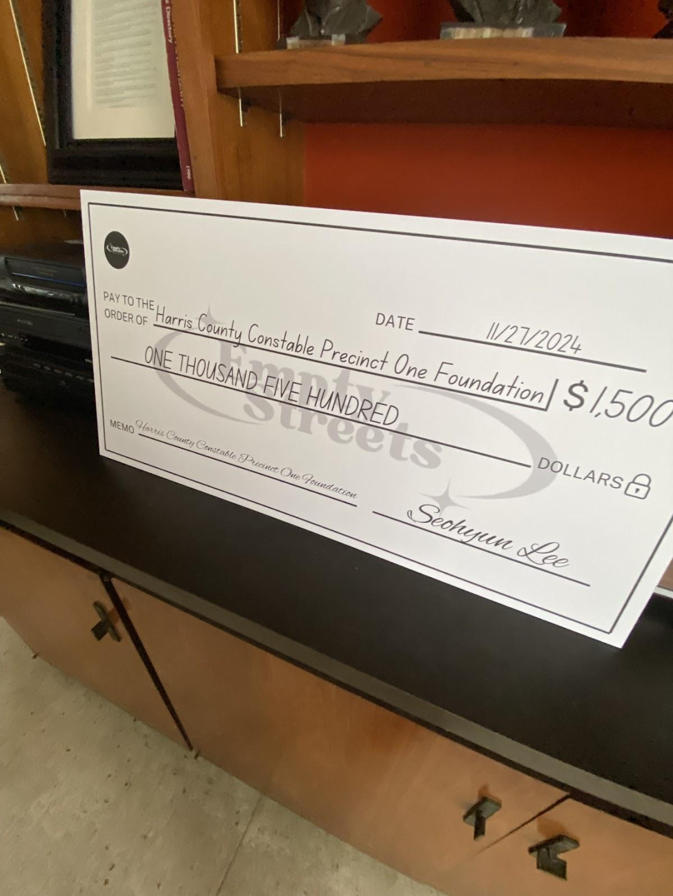

Human Trafficking
“Trafficking in persons,” “human trafficking,” and “modern slavery” are umbrella terms – often used interchangeably – to refer to a crime whereby traffickers exploit and profit at the expense of adults or children by compelling them to perform labor or engage in commercial sex. When a person younger than 18 is used to perform a commercial sex act, it is a crime regardless of whether there is any force, fraud, or coercion involved.
- U.S. Department of State
Empty Streets donates $1,500 to Houston Harris Precinct 1 Foundation

 

Who Are We?
Empty Streets is a youth-led 501c3 registered non-profit organization helping make an impact for survivors of human trafficking in the Houston Area.
We organize awareness activities to educate communities while also supplying victims/survivors with donations, cards, care packages, and more.
We also host fundraisers year-long, create informational social media posts, and collaborate with other youth-led organizations and NGOs to share knowledge, resources, and best practices in avoiding human trafficking.
JOIN US TO MAKE A CHANGE!
The Problem
Despite Houston holding the unfortunate #1 ranking for human trafficking, there is only ONE functional shelter available for survivors. Empty Streets is a non-profit organization dedicated to helping these survivors today.
The Mission
We donate clothes, food, and essential products directly to the shelters, providing them with the crucial support they desperately need.
We are living in the most dangerous city in the entire nation for human trafficking.
DONATE!
Donating is one of the biggest ways you can help our cause. Your donation is distributed between the following categories: buying toiletries and stationery for making C4K care packages, and expenses for other awareness events/fundraisers. If you would like your donation to go toward a specific category, make sure to let us know!
Donate now!